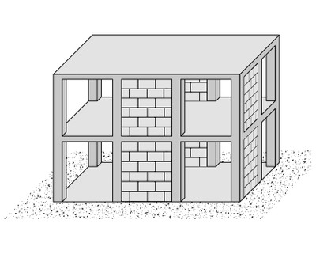
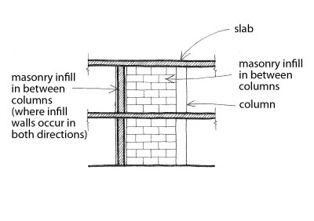

Infilled flat slab/plate or infilled waffle slab [LFLSINF]
As per Flat Slab/Plate or Waffle Slab, but where masonry or concrete infills provide lateral stability. For this type of lateral load-resisting system the infills are located between columns, otherwise the system should be described as Wall.

A simplified drawing of an infilled flat slab / plate or infilled waffle slab structure (adapted from: A. Charleson, Seismic Design for Architects, Architectural Press 2008, p64 fig. 5.2)

Partial section of an infilled flat plate structure

Diagram showing examples of flat plate and flat slabs